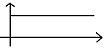
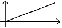
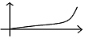
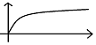
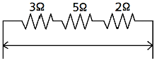

승강기기능사 (2013-10-12 기출문제)
1과목: 승강기개론
1. 유압엘리베이터의 작동유의 적정온도의 범위는?
- 30℃ 이상 70℃ 이하
- 30℃ 이상 80℃ 이하
- 5℃ 이상 90℃ 이하
- 5℃ 이상 60℃ 이하
(정답률: 86%)

2. 레일의 규격은 어떻게 표시하는가?
- 1m당 중량
- 1m당 레일이 견디는 하중
- 레일의 높이
- 레일 1개의 길이
(정답률: 74%)
3. 상·하 승강장 및 디딤판에서 하는 검사가 아닌 것은?
- 구동체인 안전장치
- 디딤판과 핸드레일 속도차
- 핸드레일 인입구 안전장치
- 스커트 가드 스위치 작동상태
(정답률: 45%)
4. 엘리베이터 구조물의 진동이 카로 전달되지 않도록 하는 것은?
- 과부하 검출장치
- 방진고무
- 맞대임고무
- 도어 인터록
(정답률: 76%)
5. 기계실에 설치되지 않는 것은?
- 조속기
- 권상기
- 제어반
- 완충기
(정답률: 75%)
6. 1,200형 엘리베이터의 시간당 수송능력(명/시간)은?
- 1,200
- 4,500
- 6,000
- 9,000
(정답률: 81%)
7. 발전기의 계자전류를 조절하여 발전기의 발생 전압을 임의로 연속적으로 변화시켜 직류모터의 속도를 연속적으로 광범위하게 제어하는 방식은?
- 사이리스터 제어방식
- 여자기 제어방식
- 워드-레오나드 방식
- 피드백 제어방식
(정답률: 75%)
8. 고속엘리베이터의 일반적인 속도 m/min 범위는?
- 40~60
- 60~1⑤
- 120~300
- 360 이상
(정답률: 63%)
9. 카의 정격속도가 45m/min 이하인 경우 꼭대기 틈새 및 피트 깊이는 각각 몇 m로 규정하고 있는가?
- 꼭대기 틈새 : 1.2m 이상, 피트 깊이 : 1.2m 이상
- 꼭대기 틈새 : 1.4m 이상, 피트 깊이 : 1.5m 이상
- 꼭대기 틈새 : 1.6m 이상, 피트 깊이 : 1.8m 이상
- 꼭대기 틈새 : 1.8m 이상, 피트 깊이 : 2.1m 이상
(정답률: 52%)
10. 도어관련 부품 중 안전장치가 아닌 것은?
- 도어 머신
- 도어 스위치
- 도어 인터록
- 도어 클로저
(정답률: 60%)
11. 수평보행기에서 경사각이 몇 도(°) 이하인 경우, 디딤판을 광폭형으로 설치할 수 있는가?
- 6°
- 8°
- 10°
- 12°
(정답률: 36%)
12. 자동차용 엘리베이터나 대형 화물용 엘리베이터에 주로 사용하는 도어 개폐방식은?
- CO
- SO
- UD
- UP
(정답률: 69%)
13. 기계실로 가는 계단의 폭은 얼마 이상으로 해야 하는가?
- 0.5m
- 0.7m
- 0.9m
- 1.1m
(정답률: 55%)
14. 엘리베이터의 속도가 규정치 이상이 되었을 때 작동하여 동력을 차단하고 비상정지를 작동시키는 기계장치는?
- 구동기
- 조속기
- 완충기
- 도어스위치
(정답률: 82%)
15. 교류 귀환제어방식에 관한 설명으로 옳은 것은?
- 카의 실속도와 지력속도를 비교하여 다이오드의 점호각을 바꿔 유도전동기의 속도를 제어한다.
- 유도전동기의 1차측 각 상에서 사이리스터와 다이오드를 병렬로 접속하여 토크를 변화시킨다.
- 미리 정해진 지령속도에 따라 제어되므로 승차감 및 착상도가 좋다.
- 교류 이단속도와 같은 저속주행시간이 없으므로 운전 시간이 길다.
(정답률: 35%)
2과목: 안전관리
16. 기계실이 있는 엘리베이터의 정격속도가 90m/min인 경우 비상정지장치의 작동속도는?
- 108m/min 이하
- 112.5m/min 이하
- 117m/min 이하
- 126m/min 이하
(정답률: 46%)
17. 균형추 쪽에도 비상정지장치를 설치해야 하는 경우는?
- 정격속도가 360m/min 이상인 승객용
- 정격속도가 400m/min 이상인 승객용
- 피트 바닥부하를 거실 등으로 사용할 경우
- 가이드 레일의 길이가 짧은 경우
(정답률: 54%)
18. 엘리베이터 정전 시 카 내를 조명하여 승객의 불안을 줄여주는 조명에 대한 설명으로 옳은 것은?(관련 규정 개정전 문제로 여기서는 기존 정답인 3번을 누르면 정답 처리됩니다. 자세한 내용은 해설을 참고하세요.)
- 램프 중심부에서 2m 떨어진 수직면에서 3lx 이상의 밝기가 필요하다.
- 램프 중심부에서 1m 떨어진 수직면에서 2lx 이상의 밝기가 필요하다.
- 램프 중심부에서 2m 떨어진 수직면에서 2lx 이상의 밝기가 필요하다.
- 램프 중심부에서 1m 떨어진 수직면에서 3lx 이상의 밝기가 필요하다.
(정답률: 75%)
19. 승강로 작업 시 착용하는 보호구로 알맞지 않은 것은?
- 안전모
- 안전대
- 핫스틱
- 안전화
(정답률: 87%)
20. 문 닫힘 안전장치의 동작 중 부적합한 것은?
- 사람이나 물건이 도어 사이에 끼이게 되면 도어의 닫힘 동작이 중단되고 열림 동작으로 바뀌게 되는 장치이다.
- 문 닫힘 안전장치는 엘리베이터의 중요한 안전장치로 동작이 확실해야 된다.
- 장치를 작동시키면 즉시 도어의 열림 동작이 멈추어야 한다.
- 닫힘 동작이 멈춘 후에는 즉시 열림 동작에 의하여 도어가 열려야 한다.
(정답률: 67%)
21. 카 상부 작업 시의 안전수칙으로 옳지 않은 것은?
- 작업개시 전에 작업등을 켠다.
- 이동 중에 로프를 손으로 잡아서는 안된다.
- 운전 선택스위치는 자동으로 설치한다.
- 안전스위치를 작동시켜 안전회로를 차단시킨다.
(정답률: 65%)
22. 안전검사 시의 유의사항으로 옳지 않은 것은?
- 여러 가지의 점검방법을 병용하여 점검한다.
- 과거의 재해 발생 부분은 고려할 필요 없이 점검한다.
- 불량부분이 발견되면 다른 동종의 설비도 점검한다.
- 발견된 불량부분은 원인을 조사하고 필요한 대책을 강구한다.
(정답률: 86%)
23. 전기적 문제로 볼 때 감전사고의 원인으로 볼 수 없는 것은?
- 전기기구나 공구의 절연파괴
- 장시간 계속 운전
- 정전작업 시 접지를 안 한 경우
- 방전코일이 없는 콘덴서를 사용
(정답률: 79%)
24. 재해의 발생 순서로 옳은 것은?
- 이상상태 - 불안전 행동 및 상태 - 사고 - 재해
- 이상상태 - 사고 - 불안전 행동 및 상태 - 재해
- 이상상태 - 재해 - 사고 - 불안전 행동 및 상태
- 재해 - 이상상태 - 사고 - 불안전 행동 및 상태
(정답률: 82%)
25. 엘리베이터의 안전장치에 관한 설명으로 틀린 것은?
- 작업 형편상 경우에 따라 일시 제거해도 좋다.
- 카의 출입문이 열려 있을 경우 움직이지 않는다.
- 불량할 때는 즉시 보수한 다음 작업한다.
- 반드시 작업 전에 점검한다.
(정답률: 81%)
26. 이상 시 재해원인 중 통계적 재해 분류에 속하지 않는 것은?
- 중상해
- 경상해
- 중미상해
- 경미상해
(정답률: 52%)
27. 에스컬레이터 사고 발생 중 가장 많이 발생하는 원인은?
- 과부하
- 기계불량
- 이용자의 부주의
- 작업자의 부주의
(정답률: 64%)
28. 전기화재의 원인이 아닌 것은?
- 누전
- 단락
- 과전류
- 케이블 연피
(정답률: 61%)
29. 엘리베이터에 많이 사용하는 가이드 레일의 허용응력은 보통 몇 kgf/cm2인가?
- 1,000
- 1,450
- 2,100
- 2,400
(정답률: 49%)
30. 비상정지장치에 대한 설명 중 옳지 않은 것은?
- 승강로 피트 하부가 통로로 사용된 경우는 카측에만 설치하여야 한다.
- 속도 45m/min 이하에는 순간적으로 정지시키는 즉시 작동형이 사용된다.
- 정격속도 90m/min인 경우 126m/min에서 작동하였다.
- 45m/min 초과의 승강기는 정격속도의 1.4배를 넘지 않는 범위에서 작동하여야 한다.
(정답률: 51%)
3과목: 승강기보수
31. 이동식 핸드레일은 운행 전 구간에서 디딤판과 핸드레일의 속도 차는 몇 [%]인가?
- 0~2
- 3~4
- 5~6
- 7~8
(정답률: 80%)
32. 에스컬레이터의 구조로서 옳지 않은 것은?
- 디딤판과 콤(Comb)이 맞물리는 지점에 물체가 끼었을 때 승강을 자동적으로 정지시키는 장치가 있어야 한다.
- 디딤판 디딤면의 주행방향 길이는 400mm 이상, 폭은 560mm 이상이어야 한다.
- 경사도는 30° 이하로 하며 다만 층고가 6m 이하일 때는 35° 이하로 할 수 있다.
- 디딤판과 디딤판과의 높이 차는 200mm 이하이어야 한다.
(정답률: 46%)
33. 비상용 엘리베이터는 정전 시 몇 초 이내에 엘리베이터 운행에 필요한 전력용량이 자동적으로 발생되어야 하는가?
- 60
- 90
- 120
- 150
(정답률: 74%)
34. 카가 최하층에 정지하였을 때 균형추 상단과 기계실 하부와의 거리는 카 하부와 완충기와의 거리보다 어떤 상태이어야 하는가?
- 작아야 한다.
- 커야 한다.
- 같아야 한다.
- 크거나 작거나 관계없다.
(정답률: 52%)
35. 엘리베이터의 파킹 스위치를 설치해야 하는 곳은?
- 오피스 빌딩
- 공동주택
- 숙박시설
- 의료시설
(정답률: 58%)
36. 엘리베이터의 운행속도를 기계적이고 전기적인 방법으로 동시에 검출하고 작동하는 안전장치는?
- 제동기
- 비상정지장치
- 조속기
- 브레이크
(정답률: 70%)
37. 압력배관 작업에 사용되는 배관이음방식에 해당되지 않는 것은?
- 관용나사를 사용한 나사이음
- 일반나사를 사용한 나사이음
- 플랜지 이음
- 빅토리 타입 이음
(정답률: 52%)
38. 엘리베이터 제어장치의 보수점검 및 조정방법으로 틀린 것은?
- 절연저항 측정
- 전동기의 진동 및 소음
- 저항기의 불량 유무 확인
- 각 접점의 마모 및 작동상태
(정답률: 30%)
39. 레일은 5m 단위로 제조되는데 T형 가이드 레일에서 13k, 18k, 24k, 30k를 바르게 설명한 것은?
- 가이드 레일 형상
- 가이드 레일 길이
- 가이드 레일 1m의 무게
- 가이드 레일 5m의 무게
(정답률: 69%)
40. 유압엘리베이터의 역저지(체크)밸브에 대한 설명으로 옳은 것은?
- 작동유의 압력이 150[%]를 넘지 않도록 하는 밸브이다.
- 수동으로 카를 하강시키기 위한 밸브이다.
- 카의 정지 중이나 운행 중 작동유의 압력이 떨어져 카가 역행하는 것을 방지하는 밸브이다.
- 안전밸브와 역저지 밸브 사이에 설치
(정답률: 69%)
41. 비상정지장치의 작동으로 카가 정지할 때까지 레일이 죄는 힘이 처음에는 약하게 그리고 하강함에 따라 강해지다가 얼마 후 일정치로 도달하는 방식은?
- 순간식 비상정지장치
- 슬랙로프 세이프티
- 플렉시블 가이드 클램프 방식
- 플렉시블 웨지 클램프 방식
(정답률: 61%)
42. 로프식 승객용 엘리베이터에서 자동 착상 장치가 고장났을 때의 현상으로 볼 수 없는 것은?
- 고속에서 저속으로 전환되지 않는다.
- 최하층으로 직행 감속되지 않고 완충기에 충돌하였다.
- 어느 한쪽 방향의 착상오차가 100㎜ 이상 일어난다.
- 호출된 층에 정지하지 않고 통과한다.
(정답률: 42%)
43. 다음 중 치수가 가장 큰 것은?
- 이동케이블과 레일 브래킷 사이의 간격
- 테일코드와 카의 간격
- 테일코드와 테일코드 사이의 간격
- 카 도어 열림 시 출입구 기둥과 도어단자 사이의 간격
(정답률: 42%)
44. 유압엘리베이터에서 도르래의 직경은 보통 주로프 직경의 몇 배 이상인가?
- 10
- 20
- 30
- 40
(정답률: 56%)
45. 강도가 다소 낮으나 유연성을 좋게 하여 소선이 파단 되기 어렵고 도르래의 마모가 적게 제조되어 엘리베이터에 사용되는 소선은?
- E종
- A종
- G종
- D종
(정답률: 61%)
4과목: 기계,전기기초이론
46. 유압엘리베이터의 카가 최하층에 정지하였을 때 완충기와의 거리는 최대 몇 ㎜이하인가?
- 300
- 400
- 500
- 600
(정답률: 39%)
47. 회전측에서 베어링과 접촉하고 있는 부분을 무엇이라고 하는가?
- 저널
- 체인
- 베어링
- 핀
(정답률: 60%)
48. 베어링의 구비 조건이 아닌 것은?
- 마찰 저항이 적을 것
- 강도가 클 것
- 가공수리가 쉬울 것
- 열전도도가 적을 것
(정답률: 48%)
49. SCR의 게이트 작용은?
- 소자의 ON-OFF 작용
- 소자의 Turn-on 작용
- 소자의 브레이크 다운 작용
- 소자의 브레이크 오버 작용
(정답률: 48%)
50. 전동기 주회로의 전압이 400V를 초과할 때 절연저항은 몇 MΩ 이상이어야 하는가?
- 0.2
- 0.4
- 0.6
- 1.0
(정답률: 68%)
51. 제어시스템의 과도응답 해석에 가장 많이 쓰이는 입력 모양은?(단, 가로축은 시간이다.)




(정답률: 47%)
52. 전자유도현상에 의한 유도기전력의 방향을 정하는 것은?
- 플레밍의 오른손법칙
- 옴의 법칙
- 플레밍의 왼손법칙
- 렌츠의 법칙
(정답률: 54%)
53. 와이어로프의 사용 하중의 파단강도의 어느 정도로 하면 되는가?
- 1/2 ~ 1/5
- 1/5 ~ 1/10
- 2/3 ~3/5
- 1/10 ~ 1/15
(정답률: 53%)
54. 인장(파단)강도가 400kg/cm2인 재료를 사용응력 100kg/cm2로 사용하면 안전계수는?
- 1
- 2
- 3
- 4
(정답률: 70%)
55. 변형량과 원래 치수와의 비를 변형률이라 하는데 다음중 변형률의 종류가 아닌 것은?
- 가로 변형률
- 세로 변형률
- 전단 변형률
- 전체 변형률
(정답률: 65%)
56. 그림과 같은 회로의 합성저항 R은 몇 Ω인가?

- 3/10
- 10/3
- 3
- 10
(정답률: 72%)
57. 3상 교류 전원을 받아서 직류전동기를 구동시키기 위해 DC전원을 만드는 장치는?
- 권상기
- 정전압장치
- 전동발전기
- 브리지회로
(정답률: 43%)
58. 접지저항을 측정하는데 적합하지 않은 것은?
- 절연저항계
- Wenner 4전극법
- 어스 테스터
- 콜라우시 브리지법
(정답률: 45%)
59. 동일 규격의 축전지 2개를 병렬로 접속하면 전압과 용량의 관계는 어떻게 되는가?
- 전압과 용량이 모두 반으로 줄어든다.
- 전압과 용량이 모두 2배가 된다.
- 전압은 반으로 줄고 용량은 2배가 된다.
- 전압은 변하지 않고 용량은 2배가 된다.
(정답률: 46%)
60. 다음 중 속도를 제어하는 제어법이 아닌 것은?
- 계자 제어법
- 전류 제어법
- 저항 제어법
- 전압 제어법
(정답률: 37%)